pacman::p_load(
palmerpenguins,
dplyr,
tidyr,
purrr,
ggplot2,
patchwork
)
data(penguins, package = "palmerpenguins")6 Visualisation de données
Un des points forts de R réside dans sa capacité à produire simplement des graphiques léchés. Pour cela, on emploie l’hégémonique package ggplot2. Il est basé sur The Grammar of Graphics (2005), ouvrage de référence sur la data-visualisation.
The Grammar of Graphics. 2005. Statistics and Computing. New York: Springer-Verlag. https://doi.org/10.1007/0-387-28695-0.
6.1 Les graphs de base sous R
R vient avec des fonctions de base pour représenter des données. Ces fonctions sont pratiques dans la mesure où on peut créer un graphique en très peu de ligne de code.
Code
# On supprime les valeurs manquantes pour éviter les erreurs
penguins <- drop_na(penguins)
# Définir la grille 2x2 pour afficher plusieurs graphiques
par(mfrow = c(2, 2))
# Graphe en ligne : masse moyenne par année
mean_mass <- summarise(penguins, mean_mass = mean(body_mass_g), .by = year)
plot(mean_mass$year, mean_mass$mean_mass, type = "l", col = "blue",
xlab = "Année", ylab = "Masse moyenne (g)",
main = "Masse moyenne des manchots par année")
# Graphe en barres : nombre d'individus par espèce
barplot(table(penguins$species), col = c("skyblue", "orange", "lightgreen"),
main = "Nombre d'individus par espèce",
ylab = "Effectif")
# Histogramme : distribution de la longueur du bec
hist(penguins$bill_length_mm, col = "lightblue", border = "white",
main = "Distribution de la longueur du bec",
xlab = "Longueur du bec (mm)")
# Boxplot : masse corporelle selon l'espèce
boxplot(body_mass_g ~ species, data = penguins,
col = c("skyblue", "orange", "lightgreen"),
main = "Masse corporelle par espèce",
ylab = "Masse (g)")
Les graphiques produits sont difficillement personnalisables et souvent peu au goût des utilisateurs. Dès que l’on souhaite produire des graphiques léchés, on se tourne vers ggplot2.
6.2 Graphiques avec ggplot2
Beaucoup d’encre a coulé sur le sujet. Je ne vais pas réinventer l’eau chaude. Vous trouverez tous ce qu’il vous faut dans le chapitre Graphiques avec ggplot2 de Joseph larmarange.
6.2.1 Les geoms de bases
| Fonction ggplot2 | Description |
|---|---|
geom_point() |
Nuage de points (relation entre deux variables) |
geom_line() |
Courbe / ligne (évolution, série temporelle) |
geom_bar() |
Graphique en bâtons (comptage automatique) |
geom_histogram() |
Histogramme (distribution d’une variable) |
geom_density() |
Courbe de densité (distribution lissée) |
geom_boxplot() |
Boîte à moustaches (résumé statistique) |
geom_tile() |
Carte de chaleur (heatmap) |
geom_text() |
Ajout de texte sur le graphique |
geom_hline() |
Ligne horizontale |
geom_vline() |
Ligne verticale |
6.2.1.1 Les lignes
Pour réaliser des nuages de points, on utilise geom_point().
to_plot_tot <- penguins |>
dplyr::count(year)
to_plot_species <- penguins |>
dplyr::count(year, species)
pal <- MetBrewer::met.brewer("Isfahan2") # color-blind friendly
# Graphique en lignes
p1 <- ggplot(to_plot_tot, aes(x = year, y = n)) +
geom_line() + theme_minimal()
p2 <- ggplot(to_plot_species, aes(x = year, y = n, color = species)) +
geom_line(linewidth = 1) +
scale_color_manual(values = pal) +
theme_minimal() +
theme(legend.position = "bottom")
wrap_plots(list(p1, p2))
6.2.1.2 Les nuages de points
Pour réaliser des nuages de points, on utilise geom_point().
# Nuage de points
p1 <- ggplot(penguins, aes(x = bill_length_mm, y = bill_depth_mm)) +
geom_point()
p2 <- ggplot(penguins, aes(x = bill_length_mm, y = bill_depth_mm, color = species)) +
geom_point() +
scale_color_manual(values = pal)
p3 <- ggplot(penguins, aes(x = bill_length_mm, y = bill_depth_mm, fill = species)) +
geom_point(shape = 21, color = "white", alpha = 0.5, size = 4) +
scale_fill_manual(values = pal)
p4 <- ggplot(penguins, aes(x = bill_length_mm, y = bill_depth_mm, size = body_mass_g)) +
geom_point(color = pal[3], alpha = 0.3) +
scale_size(range = c(0, 8))
# All graph in a single one
plts <- list(p1, p2, p3, p4)
plts <- map(plts, ~.x + theme_minimal() + theme(legend.position = "bottom"))
wrap_plots(plts)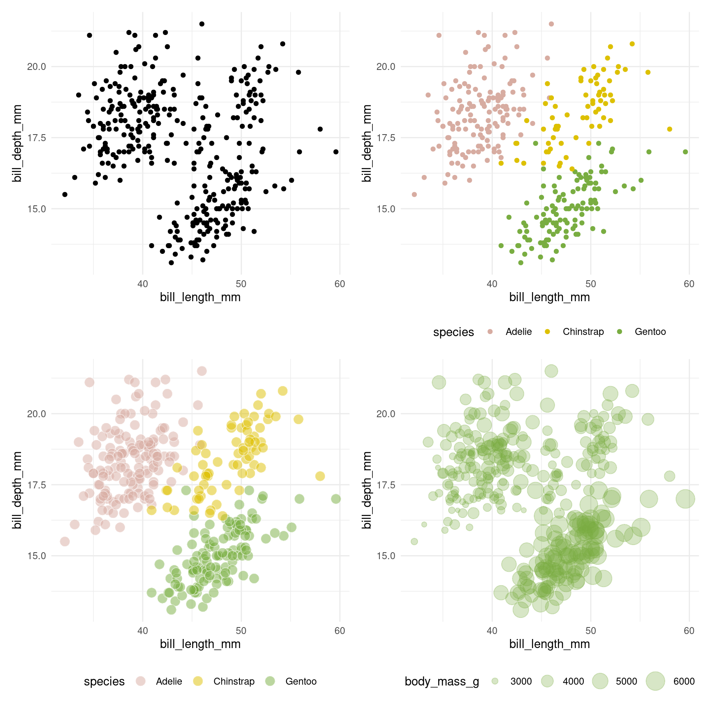
6.2.1.3 Les graphs en baton
to_plot <- drop_na(penguins)
p1 <- ggplot(to_plot, aes(x = species)) +
geom_bar()
p2 <- ggplot(to_plot, aes(x = species, fill = island)) +
geom_bar() +
labs(title = "position = \"stack\"") +
scale_fill_manual(values = pal)
p3 <- ggplot(to_plot, aes(x = species, fill = island)) +
geom_bar(position = "dodge") +
labs(title = "position = \"dodge\"") +
scale_fill_manual(values = pal)
p4 <- ggplot(to_plot, aes(x = species, fill = island)) +
geom_bar(position = "fill") +
labs(title = "position = \"fill\"") +
scale_fill_manual(values = pal)
# All graph in a single one
plts <- list(p1, p2, p3, p4)
plts <- map(plts, ~.x + theme_minimal() + theme(legend.position = "bottom"))
wrap_plots(plts)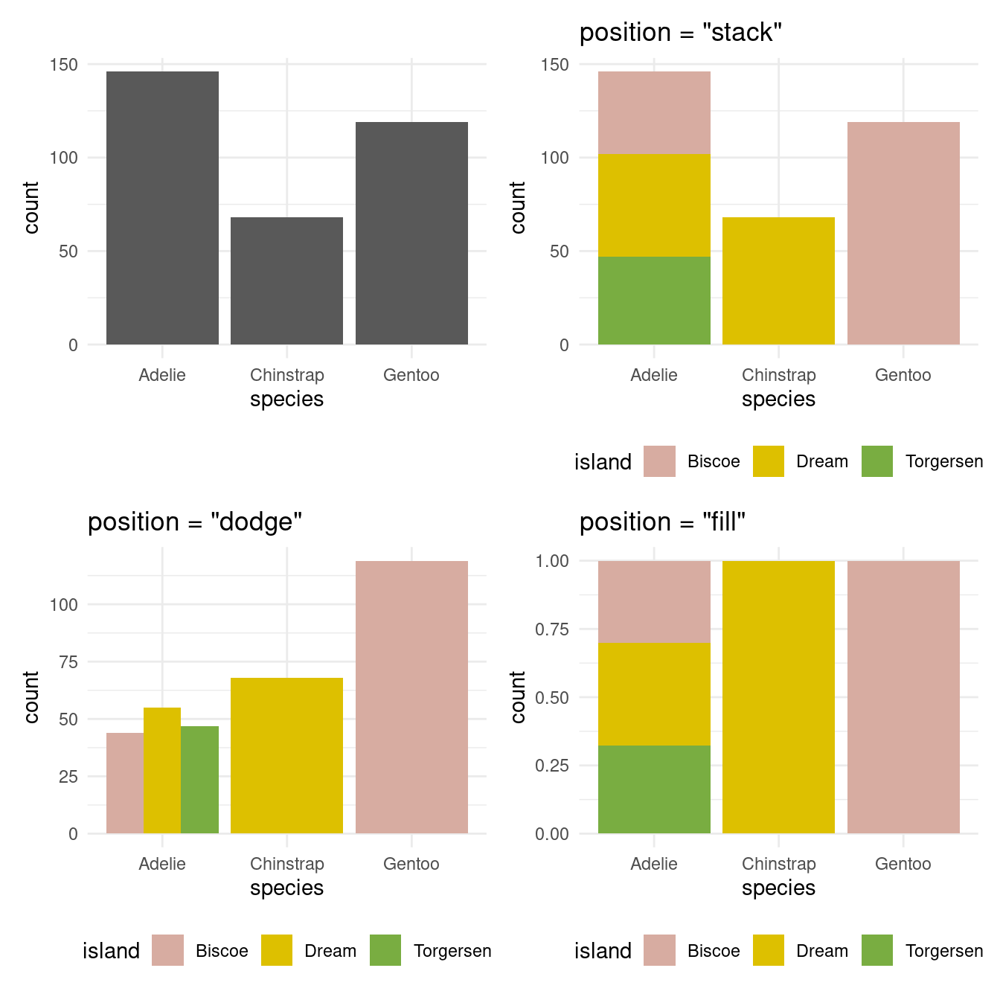
6.2.1.4 Les graphiques statistiques
Pour rappel, les graphiques statistiques servent à comprendre la distribution des variables.
Boîte à moustache (et associés) :
p1 <- ggplot(penguins, aes(y = body_mass_g)) +
geom_boxplot()
p2 <- ggplot(penguins, aes(x = species, y = bill_length_mm)) +
geom_boxplot()
p3 <- ggplot(penguins, aes(x = species, y = bill_length_mm, fill = species)) +
geom_boxplot() +
scale_fill_manual(values = pal)
p4 <- ggplot(penguins, aes(x = species, y = bill_length_mm, fill = species)) +
geom_violin() +
geom_boxplot(width = 0.1, fill = "white") +
scale_fill_manual(values = pal)
plts <- list(p1, p2, p3, p4)
plts <- map(plts, ~.x + theme_minimal() + theme(legend.position = "bottom"))
wrap_plots(plts)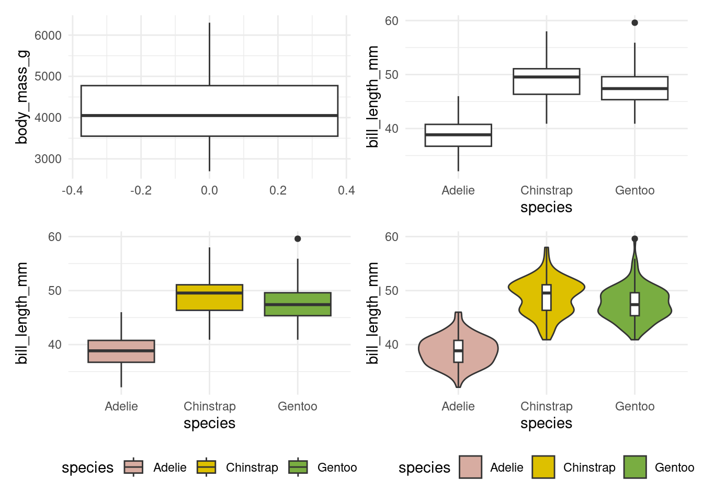
Histogrames :
p1 <- ggplot(penguins, aes(x = body_mass_g)) +
geom_histogram()
p2 <- ggplot(penguins, aes(x = body_mass_g)) +
geom_histogram(bins = 80)
p3 <- ggplot(penguins, aes(x = body_mass_g, fill = species)) +
geom_histogram(color = "white") +
scale_fill_manual(values = pal)
p4 <- ggplot(penguins, aes(x = body_mass_g)) +
geom_histogram(aes(y = ..density..), fill = "white", color = "black") +
geom_density(fill = pal[3], alpha = 0.2)
plts <- list(p1, p2, p3, p4)
plts <- map(plts, ~.x + theme_minimal() + theme(legend.position = "bottom"))
wrap_plots(plts)
Courbe de fréquence cumulée (Empirical Cumulative Distribution Function) :
p1 <- ggplot(penguins, aes(x = body_mass_g)) +
stat_ecdf(geom = "step")
p2 <- ggplot(penguins, aes(x = body_mass_g, color = species)) +
stat_ecdf(geom = "step") +
scale_color_manual(values = pal)
plts <- list(p1, p2)
plts <- map(plts, ~.x + theme_minimal() + theme(legend.position = "bottom"))
wrap_plots(plts)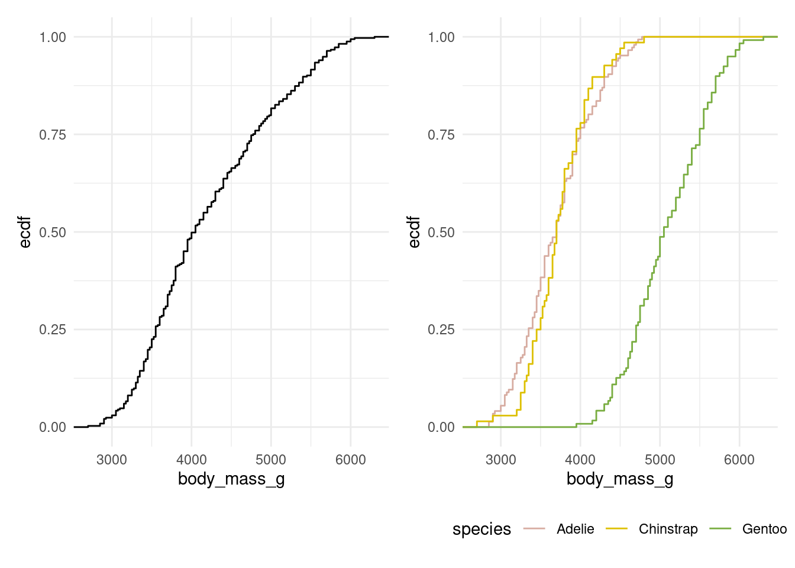
6.2.2 Faire des graphs par groupe
Avec ggplot2, il est possible de générer des graphs par groupes. Par exemple, on peut vouloir comparer la longueur et la profondeur du bec des pingouins par espèce dans des graphs séparés. Plutôt que d’écrire manuellement trois graphs ou d’écrire une boucle, on peut utiliser la fonction facet_wraps().
ggplot(penguins, aes(bill_length_mm, bill_depth_mm)) +
geom_point() +
facet_wrap(vars(species))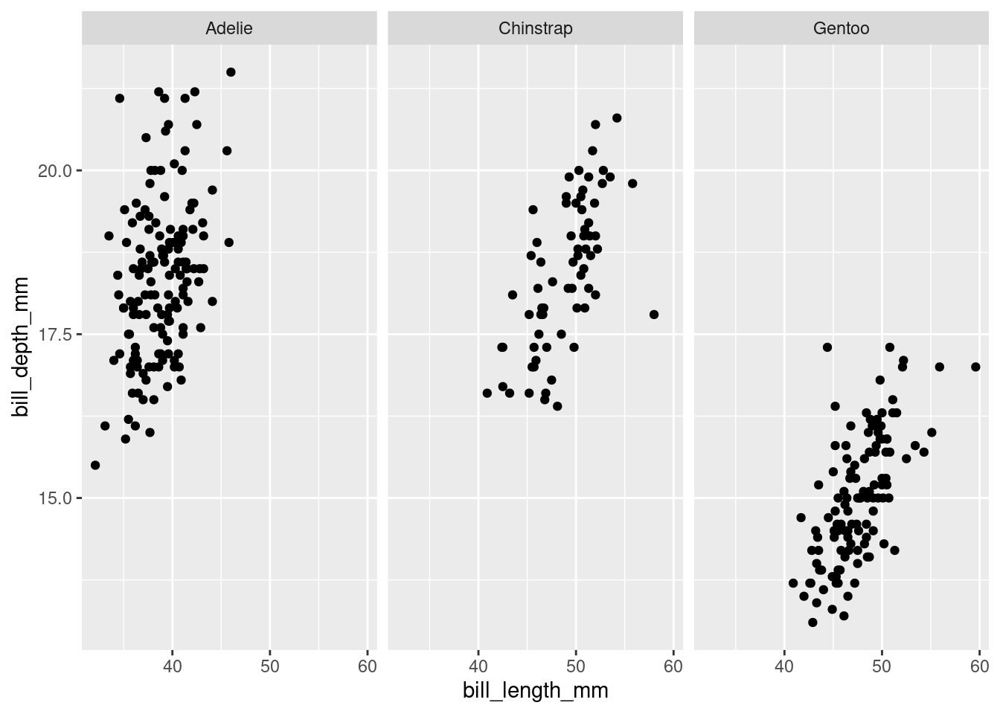
On peut aussi garder l’ensemble du nuage sur chaque plot pour faciliter la comparaison :
ggplot(penguins, aes(bill_length_mm, bill_depth_mm)) +
geom_point(data = transform(penguins, species = NULL), colour = "grey85") +
geom_point() +
facet_wrap(vars(species))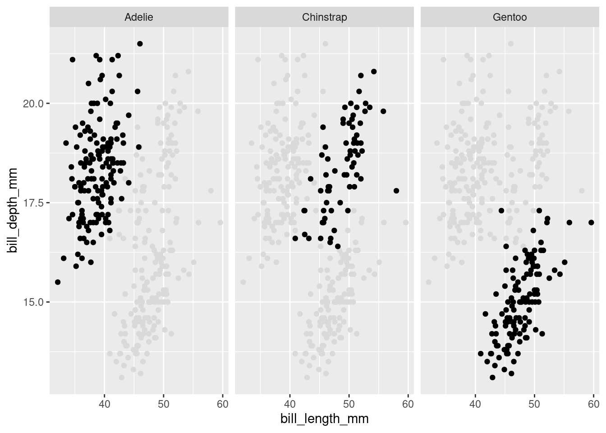
6.2.3 Apparence
Pour modifier l’apparence du graphique, on utilise la fonction theme(). Vous pouvez tout modifier, le texte, la grille, les axes, etc. (cf. Figure 6.1).

6.2.3.1 Les thèmes par défaut
Il existe de nombreux thèmes par défaut que vous pouvez essayez. Par exemple :
p <- ggplot(mtcars, aes(x = wt, y = mpg)) +
geom_point() +
labs(
title = "Fuel Efficiency vs Weight",
x = "Weight (1000 lbs)",
y = "Miles per Gallon",
caption = "source : mtcars (dplyr), 2025. Réal. : Antoine Le Doeuff, 2025"
)
p1 <- p + labs(caption = "") + theme_minimal()
p2 <- p + theme_classic()
patchwork::wrap_plots(list(p1, p2))
Des packages proposent des packages supplémentaires prêt à l’emploie. Je vous conseil ces deux packages1 : bbplot, hrbrthemes.
1 Vous trouverez une liste plus exhaustive ici.

6.2.3.2 Les couleurs
Pour modifier les couleurs des couches, on utilise les fonctions scale_color_*() ou scale_fill_*() en fonction de l’esthétique que vous aurez spécifié dans votre votre couche.
Pensez aux daltonien⋅nes
Utilisez des palettes discernables par les daltonien⋅nes (color-blind friendly).
Vous pouvez avoir un aperçu de comment votre plot sera perçu pour un⋅e daltonien⋅ne avec la fonction colorblindr::cvd_grid().
p_bl <- ggplot(mtcars, aes(x = wt, y = mpg, color = as.factor(carb))) +
geom_point() +
theme_minimal()
colorblindr::cvd_grid(p_bl)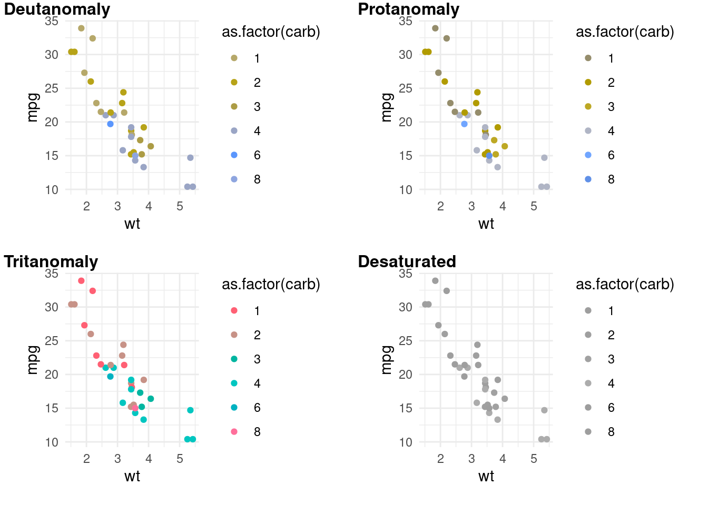
Personnellement, j’aime bien les packages suivants :
- MetBrewer: Inspiré des œuvres du MET
- MexBrewer: Inspiré par les peintres et muralistes mexicains.
- MoMA: Inspiré des œuvres exposées au MoMA.
- PNWColors: Inspiré des couleurs du Pacific Nord-Ouest.
- wesanderson: Inspiré des couleurs présentes dans les films de Wes Anderson.
- NatParksPalettes: Inspiré de photos de parcs naturels.
- scico: Très bien pour les palettes de couleurs continues.
6.2.3.3 Textes
Pour modifier la police de caractère, on peut par exemple employer la fonction font_add_google() du package sysfont. Cela vous permet d’importer une famille typographique depuis google font.
# Charger la font
sysfonts::font_add_google(name = "Roboto", family = "roboto")
p +
theme(
plot.title = element_text(family = "roboto", size = 16, face = "bold"),
axis.title.x = element_text(family = "roboto", size = 12),
axis.title.y = element_text(family = "roboto", size = 12),
plot.caption = element_text(family = "roboto", size = 8)
)
Pour plus de controle sur le rendu texte, vous pouvez utiliser le package ggtext. Celui-ci vous permet notamment d’écrire vos labels en markdown.
library(ggtext)
p +
labs(
title = "Efficacité énergétique vs Poids",
x = "*Poids* (1000 lbs)",
y = "*Miles per Gallon*",
caption = "**Source :** mtcars (dplyr), 2025<br>**Réalisation :** Antoine Le Doeuff, 2025"
) +
theme_minimal() +
theme(
plot.title = element_markdown(family = "roboto", size = 16, face = "bold"),
axis.title.x = element_markdown(family = "roboto", size = 12),
axis.title.y = element_markdown(family = "roboto", size = 12),
plot.caption = element_markdown(family = "roboto", size = 8, lineheight = 1.5)
)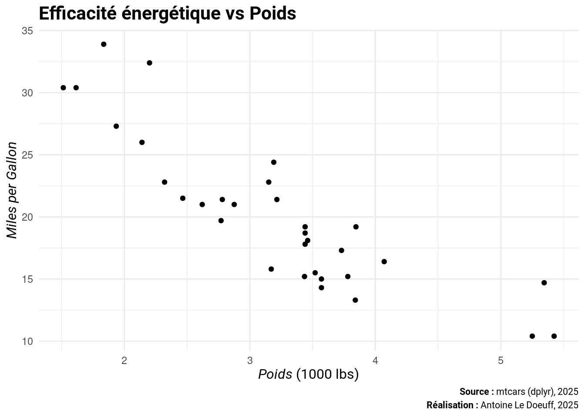
6.2.3.4 Créer son propre thème
Quant on rédige un document, on s’appuie sur une identité visuelle basée en partie sur une charte graphique. En un mot : il faut se tenir à des règles graphiques valables pour l’ensemble de figures. ggplot2 permet de mettre en œuvre cette règle simplement par la création d’un thème que l’on pourra appliquer à tout objet ggplot2 (cartes comprises).
Prenons un exemple, construisons un thème basé sur le thème ggplot2 par défaut theme_minimal() :
sysfonts::font_add_google(name = "Roboto", family = "roboto")
my_theme <- function(base_size = 11, base_family = "roboto", theme_color = "#00976f") {
ggplot2::theme_minimal(base_size = base_size, base_family = base_family) +
ggplot2::theme(
# Titres
plot.title = ggtext::element_markdown(
family = "roboto", size = base_size + 5, face = "bold", color = theme_color
),
axis.title.x = ggtext::element_markdown(family = "roboto", size = base_size, face = "italic"),
axis.title.y = ggtext::element_markdown(family = "roboto", size = base_size, face = "italic"),
plot.caption = ggtext::element_markdown(family = "roboto", size = base_size - 3, lineheight = 1.5),
# Légende
legend.position = "right",
legend.title = ggplot2::element_text(face = "bold"),
legend.background = ggplot2::element_blank(),
legend.key = ggplot2::element_blank(),
# Marges
plot.margin = ggplot2::margin(5, 5, 5, 5)
)
}ggplot(mtcars, aes(x = wt, y = mpg)) +
geom_point() +
labs(
title = "Efficacité énergétique vs Poids",
x = "Weight (1000 lbs)",
y = "Miles per Gallon",
caption = "**Données :** mtcars (dplyr), 2025.<br>**Réalisation :** Antoine Le Doeuff, 2025"
) +
my_theme()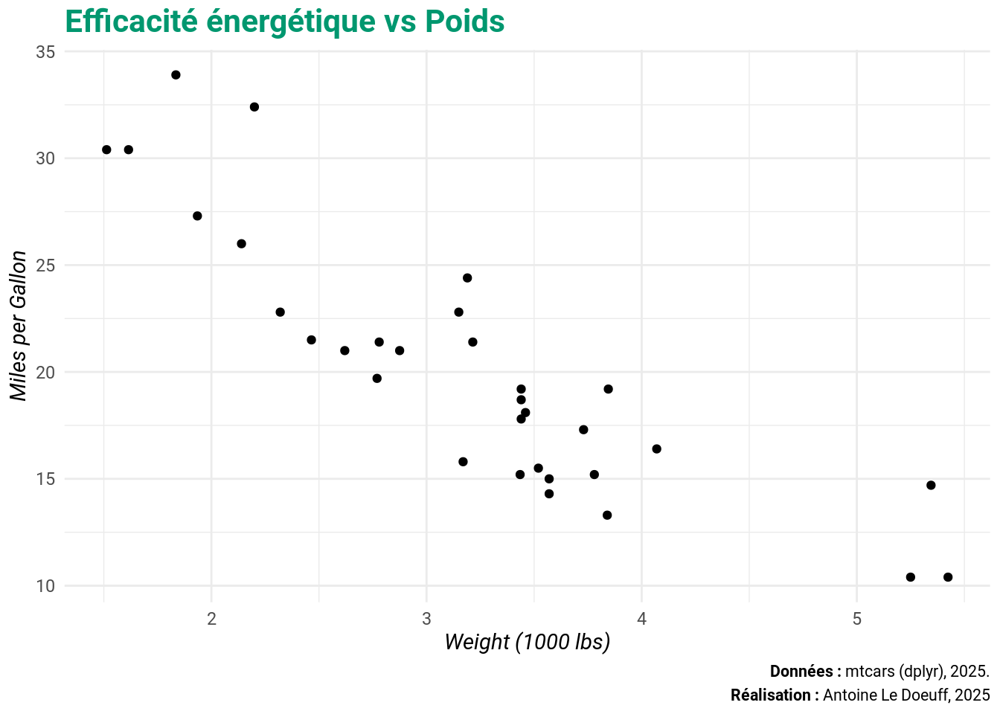
On peut faire d’un thème le thème par défaut pour la session R courante.
theme_set(my_theme())
ggplot(mtcars, aes(x = as.factor(cyl), y = mpg)) +
geom_boxplot() +
labs(
title = "Efficacité énergétique vs Nombre de cylindres",
x = "Nombre de cylindres",
y = "Miles per Gallon",
caption = "**Données :** mtcars (dplyr), 2025.<br>**Réalisation :** Antoine Le Doeuff, 2025"
)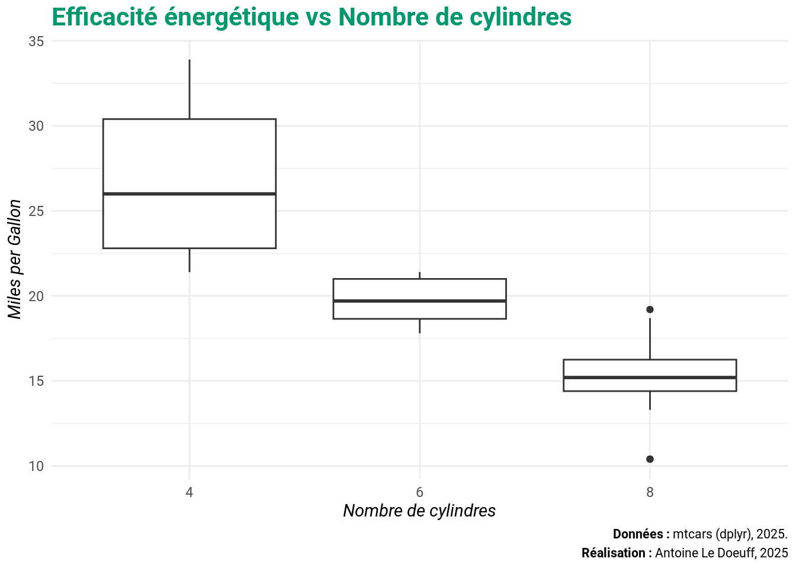
6.2.4 Combiner des graphs
Il existe de nombreux packages pour combiner des graphs ggplot sous R, voici les plus utilisés :
pacthwork: Le plus utilisé aujourd’hui, il est très intuitif.cowplot: Très utilisé historiquemenygridExtra: Ancien mais encore courant
Je vous conseil d’utiliser patchwork. Pour combiner deux graphs horizontalement, on utilise le + :
library(patchwork)
p1 <- ggplot(penguins) + geom_point(aes(bill_depth_mm, bill_length_mm))
p2 <- ggplot(penguins) + geom_boxplot(aes(species, body_mass_g))
p1 + p2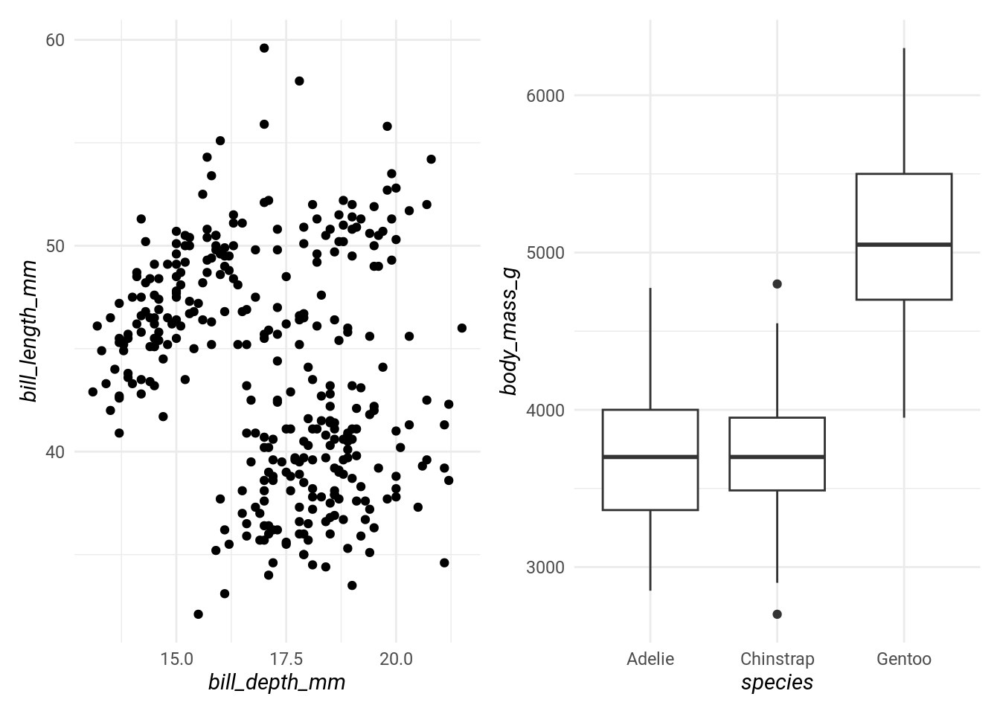
# Ce qui revient au même que wrap_plots(list(p1, p2), nrow = 1, ncol = 2)Pour combiner deux graphs verticalement, le / :
p3 <- ggplot(penguins) + stat_ecdf(aes(body_mass_g), geom = "step")
p4 <- ggplot(penguins) + geom_bar(aes(species))
p3 / p4
# Ce qui revient au même que wrap_plots(list(p1, p2), nrow = 2, ncol = 1)On peut combiner les opérateurs pour obtenir un rendu complexe :
p_all <- (p1 | p2 | p3) / p4Vous pouvez bien sûr ajouter des annotations aux graphs.
p_all +
plot_annotation(
title = "Graphiques combinés",
caption = "Données : palmerpenguins, 2025. Réalisation : Antoine Le Doeuff, 2025",
# Ajouter des tags
tag_levels = 'A',
)